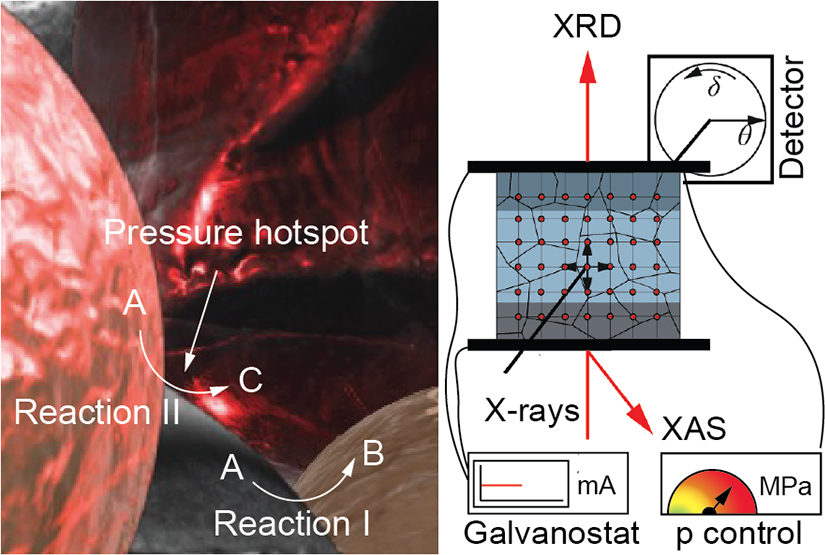

Pressure-Aware Operando X-ray Methods Reveal True Mechanistic Pathways in Solid-State Batteries Phương pháp operando tia X nhận biết áp suất hé lộ cơ chế phản ứng thực trong pin thể rắn Trykkbevisste operando-røntgenmetoder avslører sanne mekanistiske veier i faststoffbatterier
Uncontrolled pressure and temperature cause relaxation artifacts and false mechanistic interpretations. We built an operando XRD/XAS framework with precisely controlled dynamic pressure and temperature — yielding consistent, reproducible datasets across three platforms. Áp suất và nhiệt độ không được kiểm soát gây ra sai lệch do hồi phục và dẫn đến diễn giải cơ chế sai lầm. Chúng tôi phát triển một hệ operando XRD/XAS kiểm soát chính xác áp suất và nhiệt độ động — cho ra bộ dữ liệu nhất quán và có thể tái lập trên cả ba nền tảng. Ukontrollert trykk og temperatur gir relaksasjonsartefakter og feiltolkninger. Vi bygde et operando XRD/XAS-rammeverk med presist kontrollert dynamisk trykk og temperatur — med konsistente, reproduserbare datasett på tvers av tre plattformer.
View on the journal ↗Xem trên tạp chí ↗Se i tidsskriftet ↗